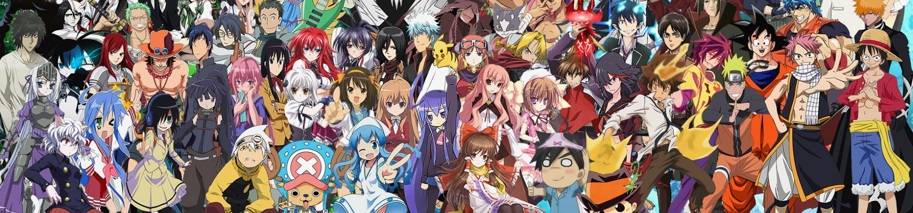
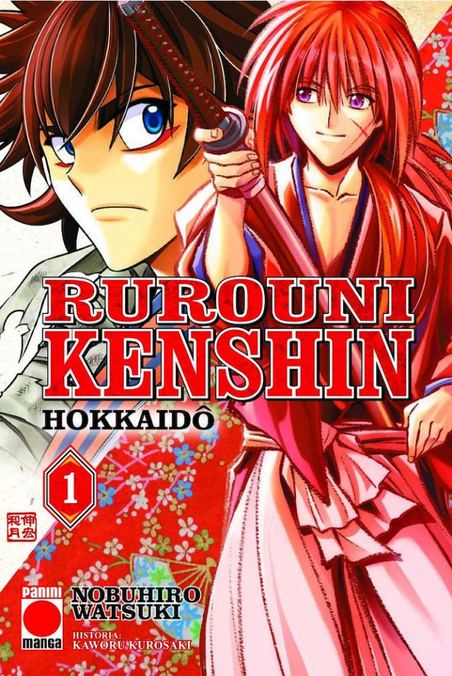

Manga para todos los gustos
Bienvenido
Aquí leerás reseñas interesantes de mis mangas favoritos
NOVEDADES

Rurouni Kenshin continúa con un nuevo manga
Hokkaidô recupera la historia desde su final en el manga original
La noticia de hoy, sin embargo, no va de colecciones nostálgicas definitivas, sino de historias que continúan después de muchos años. Ruorouni Kenshin Hokkaidô acumula ya seis tomos en Japón.
El manga revelación de los últimos años
Sigue sumando ventas, ya alcanza 26 millones de copias!
El editor reveló los números actualizados de cuántas copias físicas de los volúmenes se han impreso y vendido tanto de esa forma como digitalmente.
Vuelve una de las series más queridas
Serie de 5 tomos
Esta nueva edición incluye las portaas anteriores, rescatando de la edición original japonesa sus páginas en papel vegetal, trayendo además nuevas portadas diseñadas por la autora